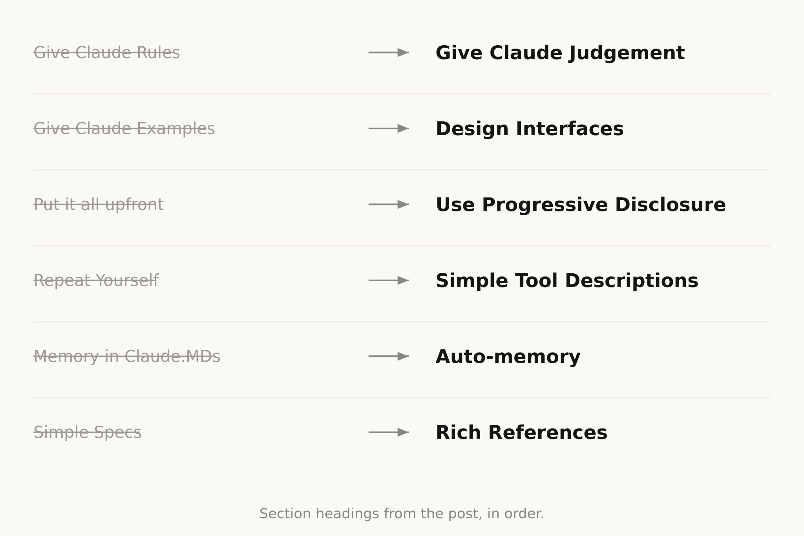
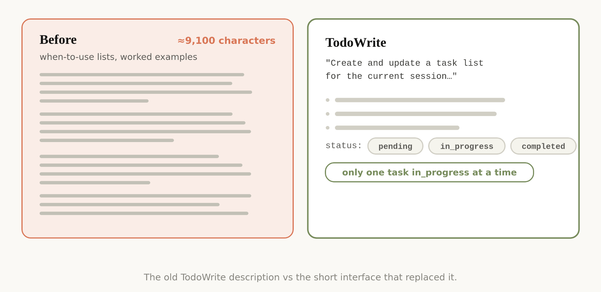
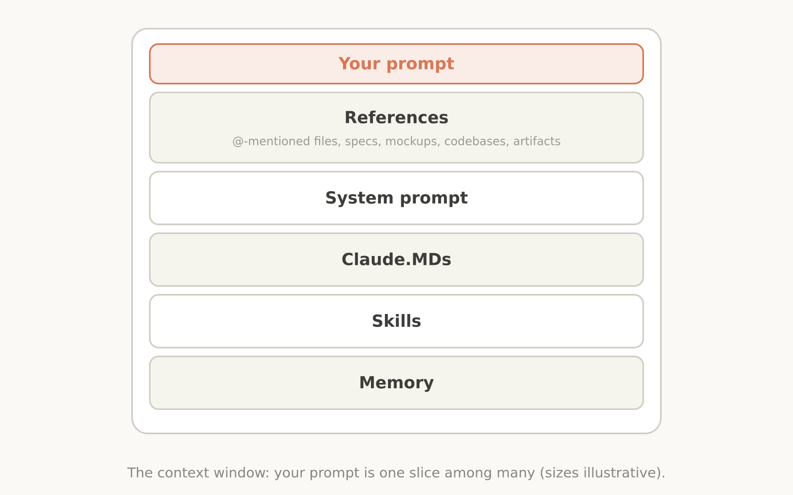

当模型越来越强，系统提示词该写得更详细还是更精简？Anthropic的答案是：砍掉80%。
Thariq（Anthropic技术成员）分享了一组Claude Code团队的最新实践。核心结论是为Claude Opus 5和Fable 5等新一代模型，可以移除超过80% 的系统提示词，编码评估指标没有任何下降。核心洞察是：Claude 5代模型自己有了更好的判断力，过去用来约束模型的「护栏」现在反而成了束缚。
团队在审查内部使用记录时发现，同一个请求中经常出现互相矛盾的指令：系统提示词说「适当留下文档」，Skill说「不要加注释」，用户请求又是另一套。
Claude仍然能理解用户意图并给出正确答案，但它需要花更多精力去处理这些重叠和冲突的信息。过去这些约束是必要的：没有它们，老模型会犯错。但新模型有了更好的判断力，可以在没有明确规则的情况下做出正确决策。
此外，Claude Code的工具生态也发生了根本变化。以前CLAUDE.md是记忆、信息和指导的唯一来源，现在有了memory、artifacts和skills，Claude可以用多种方式跨会话加载和共享上下文。
团队总结了六个关键转变，这些曾经的最佳实践现在已成为神话：
旧做法：在系统提示词中写死规则：「默认不写注释，最多一行，不要创建规划文档」。新做法：只说「写的代码要和周围代码风格一致：匹配注释密度、命名习惯和惯用法」。新模型能自己判断什么时候该写注释、什么时候不该写。

旧做法：给Claude大量工具使用示例。新做法：设计好工具的接口本身：参数名、类型、枚举值：让接口自己表达使用方式。例如Todo工具的status字段用pending / in_progress / completed枚举，比写一堆示例更有效。示例反而会把模型限制在特定的探索空间里。

旧做法：把所有信息塞进系统提示词，因为不知道什么时候会用。新做法：把不常用的信息（如代码审查规范、验证流程）拆成独立的Skill，Claude需要时再调用。Claude Code还实现了「延迟加载」工具：Agent必须先通过ToolSearch找到工具定义才能使用，这样更多工具不会占用上下文，直到真正需要时。
旧模型有时需要在系统提示词和工具描述中重复相同的指令（上下文末尾的指令比开头的更有效）。新模型不再需要这种重复，工具的使用说明只需放在工具描述中，系统提示词中可以删除这些重复内容。
以前鼓励用户用 # 快捷键把重要信息存到CLAUDE.md中。现在Claude会自动保存与当前工作相关的记忆，不再需要手动管理。
旧做法：用markdown文件存储计划和规格。新做法：Claude可以处理更复杂的参考：HTML artifacts、测试集、甚至其他代码库中的函数。评分标准（Rubric）是另一种参考形式，它让Claude可以在动态工作流中启动验证Agent来检查输出是否符合你的品味。
把这些原则落实到具体组件：
System Prompt：紧密绑定产品上下文，告诉Claude它在什么产品中做什么事。如果你是构建自己的Agent Harness，这是最值得投入的地方。
CLAUDE.md：保持轻量，简要描述仓库用途，大部分精力放在代码库的坑（gotchas）上。避免写Claude通过看文件系统就能知道的东西。用渐进式披露：如果有独特的验证流程，创建一个验证Skill并在CLAUDE.md中引用。
Skills：当作轻量指南，让Claude需要时找到信息。避免过度约束，除非是极端重要的领域。长Skill用渐进式披露：拆成多个文件。Skill最适合编码你、你的团队或产品特有的观点、知识和最佳实践。
References：用 @ 引用文件作为参考。优先使用代码形式的参考：HTML mockup比文字描述或截图效果更好。测试集是另一种极好的参考形式。

参考：https://claude.com/blog/the-new-rules-of-context-engineering-for-claude-5-generation-models